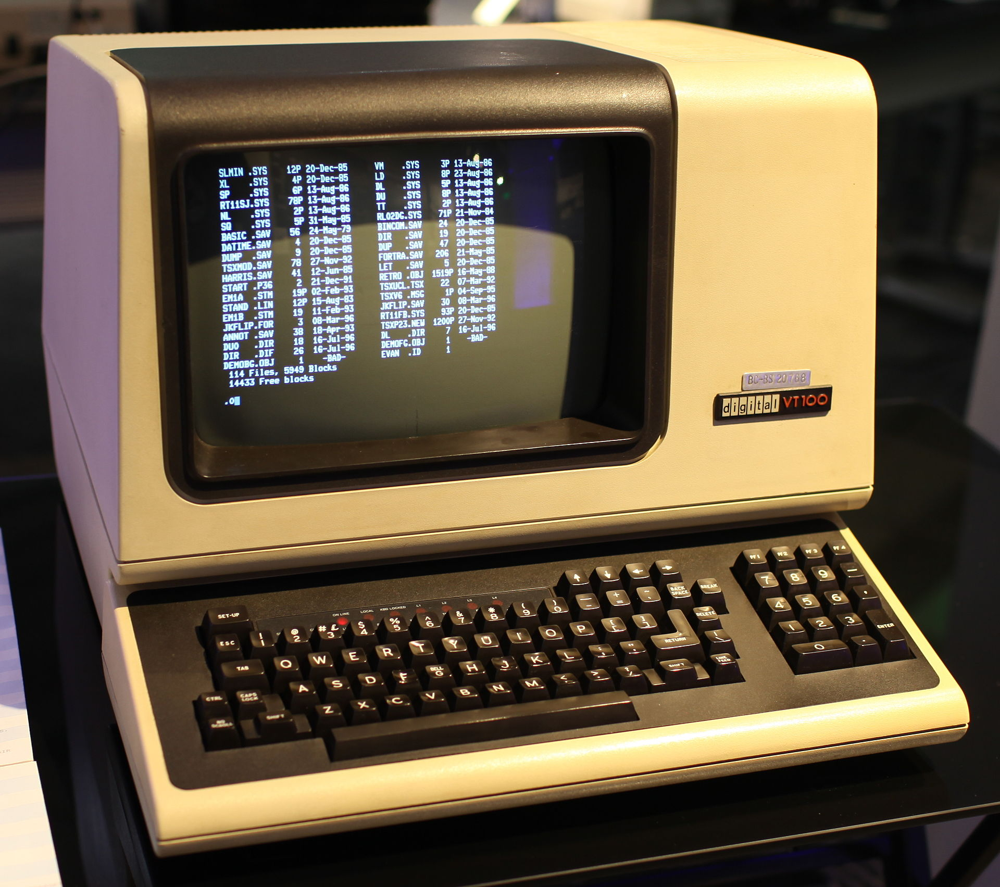
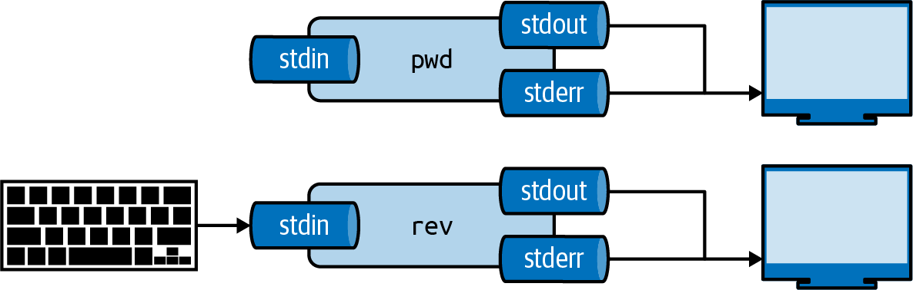

3 Nushell Fundamentals and Data Structures
3.1 Data Science
According to Hilary Mason and Chris H. Wiggins (2010), data science is framed around five interconnected stages, commonly referred to as the OSEMN framework:
- Obtaining data.
- Scrubbing data.
- Exploring data.
- Modeling data.
- Interpreting data.
This book focuses hands-on attention on the first four computational stages.
Although these five stages are often presented sequentially, practical data science work moves fluidly back and forth between them, frequently executing multiple stages in parallel (Figure 1). Data science is fundamentally an iterative, non-linear discipline.

3.1.1 Obtaining Data
Without data, there is no data science; acquiring information is therefore the indispensable starting point. Depending on the problem domain, this stage involves:
- Downloading data from external servers, web endpoints, or public repositories.
- Querying relational databases or REST APIs (for instance, SQLite, PostgreSQL, or web services).
- Parsing and ingesting structured or semi-structured files (such as CSV, JSON, HTML, XML, or Excel spreadsheets).
- Capturing real-time streams from physical sensors or digital loggers.
Common storage formats encountered in practice include plain text
(.txt), delimited tables (.csv,
.tsv), hierarchical representations (.json,
.xml, .html), and columnar formats
(.parquet).
3.1.2 Scrubbing Data
Raw data rarely arrives clean. Real-world datasets routinely suffer from missing observations, formatting inconsistencies, schema violations, corrupt encodings, and irrelevant columns. In these situations, data must be scrubbed before analysis can take place. Essential operations include:
- Filtering invalid or out-of-range rows.
- Selecting and reordering relevant columns.
- Normalizing, trimming, and recasting string values.
- Imputing or dropping missing values and deduplicating rows.
- Converting between serialization formats.
In industry practice, data acquisition and scrubbing account for roughly 80% of total project effort. The remaining 20% encompasses exploratory analysis, modeling, and communication.
3.1.3 Exploring Data
Once the data is scrubbed and structured, exploratory data analysis begins. This stage builds a reliable mental model of the underlying distributions and relationships. Working directly in the terminal, you will:
- Inspect schemas, data types, and value distributions.
- Compute descriptive summary statistics (central tendency, variance, quantiles).
- Generate high-fidelity visual representations and plots directly in your console.
3.1.4 Modeling Data
When the goal is to explain observed relationships or forecast future values, statistical and machine learning models are required. Standard modeling techniques include dimensionality reduction, unsupervised clustering, regression, and supervised classification.
While implementing novel algorithms from scratch is rarely done in shell pipelines, orchestrating training pipelines, evaluating performance metrics, and managing model inferences directly from the command line is exceptionally powerful.
3.1.5 Interpreting Data
The final stage is interpreting the findings. This stage centers on:
- Drawing substantive, actionable conclusions from model outputs.
- Evaluating empirical validity and algorithmic bias.
- Communicating results clearly to technical and non-technical stakeholders.
This stage demands domain expertise and critical judgment rather than automated scripts.
3.2 History of the Terminal
A terminal emulator is a program that provides access to the command-line interface through a particular command interpreter called a shell.
Historically, a terminal was a dedicated physical hardware device used to transmit keystrokes to and display characters from a host computer.
Early computers were massive, room-sized installations (Figure 2). The earliest interactive terminals were electromechanical teletypewriters (commonly abbreviated tty), as illustrated in Figure 3.

As semiconductor and cathode-ray tube technology progressed, mechanical printers gave way to video display terminals (Figure 4).

It is worth emphasizing that the device pictured in Figure 4 contains no onboard computer; it is solely an interface terminal connected across serial lines to a remote mainframe. Figure 5 illustrates a terminal cabled directly to its host computer.

Today, dedicated physical terminals are obsolete. Instead, software applications known as terminal emulators simulate historical display hardware, communicating directly with the operating system without requiring graphical widgets (windows, buttons, dialog boxes).
3.2.1 The Shell
The shell is the command interpreter that parses and executes instructions entered into the terminal. Numerous shells exist, including Bash, Zsh, Fish, and Nushell. Bash historically serves as the default shell across most GNU/Linux distributions.
In this textbook, we work exclusively with Nushell. In Nushell, each
command line begins with an interactive prompt (such as
/data>), signaling that the environment is ready for
input.
3.2.2 Advantages of the Command Line for Data Science
Using the command line for data science offers substantial operational advantages:
- Agility: The command line supports rapid, interactive data exploration, returning immediate feedback as pipelines are assembled.
- Integration: Shell commands bridge disparate tools, programming runtimes, and external services cleanly.
- Scalability and Automation: Command sequences are effortlessly captured in reusable scripts and automated cron jobs.
- Extensibility: Shell pipelines orchestrate tools written in any language (Rust, C, Python, R).
- Ubiquity: Command-line environments are universally available across local workstations, cloud virtual machines, and high-performance computing clusters.
3.3 The Terminal
Before exploring Nushell’s typed data structures, let us review the core mechanics of the terminal environment and examine how traditional shells operated before Nushell.
3.3.1 The Interactive Environment (REPL)
Command-line interaction is governed by an ongoing loop known as a REPL (Read-Eval-Print Loop):
- The terminal displays an interactive prompt (for instance,
/data/ch03>), indicating the active directory and signaling readiness for input. - The user types a command pipeline and presses
Enter. - The shell parses the text, checks syntax, evaluates the pipeline, and executes the designated programs or built-in functions.
- The resulting output renders in the terminal window, and the prompt reappears.
3.3.2 Running Commands and Saving Output to Files
To work through the examples in this chapter, switch into the chapter workspace:
cd /data/ch03From this point forward, commands run relative to
/data/ch03. Inspect the files in this directory:
lsTo examine the first 5 rows of movies.txt, open the file
in the current directory (open movies.txt), split its
contents into lines (lines), and select the first 5
elements (first 5):
open movies.txt | lines | first 5In reproducible data pipelines, we frequently need to write processed
outputs to disk rather than merely inspecting them on screen. Use the
save -f command to write data to a file:
open movies.txt | lines | first 5 | to text | save -f movies_top5.txt
open movies_top5.txt3.3.3 Command-Line Tool Categories
When you enter a command name in the terminal, it resolves to one of five distinct categories:
- Nushell built-in command: An internal command
executed directly in memory by Nushell’s runtime engine, operating
natively on structured data (for example,
ls,open,where,select,math avg). - Custom command (function): A user-defined or
module-exported command declared with
deforexport def(such asto-vwortapkee-reduce). - Alias: A shorthand identifier that expands into
another command with predefined flags or arguments
(
alias ll = ls -l). - Interpreted executable script: A text file with
executable permissions and an initial shebang line
(
#!/usr/bin/env nu,#!/usr/bin/env python3,#!/usr/bin/env Rscript). - Compiled binary executable: A machine-code program
residing on the system
.PATH(such asttt,timg,vw,tapkee, orgit).
You can check how any command resolves by using
which:
which ls open ttt timg python3 Rscript3.3.4 Traditional Shells (Bash and Zsh): Architecture, Philosophy, and Limitations
To understand why Nushell represents a fundamental
architectural advancement for data science, it helps to examine how
traditional Unix shells (such as the Bourne Shell sh,
Bourne-Again Shell bash, and Z Shell zsh)
process data.
3.3.4.1 The Role of Traditional Shells
In Unix-like systems, a traditional shell performs two distinct roles simultaneously:
- Interactive command interpreter: It acts as the
user’s interface to the operating system kernel. When you enter a
command in
bash, the shell locates the binary across the directories defined in thePATHenvironment variable, asks the kernel to spawn a child process viafork()andexecve()`, and waits for the process to exit. - Scripting and automation language: It provides
syntax for control flow (
if/then/fi,for,while), environment variable management, and process chaining to automate system administration routines.
3.3.4.2 The Unix Philosophy and Plain-Text Streams
Formulated at Bell Labs during the 1970s by Ken Thompson, Dennis Ritchie, and Douglas McIlroy (who invented Unix pipes in 1973), the Unix philosophy rests on three central tenets:
- Write programs that do one thing and do it well.
- Write programs to work together.
- Write programs to handle text streams, because that is a universal interface.
Under POSIX-compliant shells like bash, processes
communicate across three unstructured byte streams:
- Standard input (
stdin, file descriptor 0): The byte stream read by the program. - Standard output (
stdout, file descriptor 1): The byte stream where normal program output is written. - Standard error (
stderr, file descriptor 2): An unbuffered byte stream reserved for diagnostics and error messages.

Connecting commands via the pipe operator (|) redirects
the stdout of one process directly into the
stdin of the next.
3.3.4.3 Limitations of Plain-Text Streams for Data Science
While treating data as unstructured byte streams was revolutionary in 1973, it introduces severe friction for modern data science workflows:
- Loss of types and semantic schemas: Traditional pipes discard all type metadata. Numbers, dates, and nested records collapse into undifferentiated ASCII/UTF-8 text. Every subsequent command in the pipeline must guess column widths, parse delimiters, and reconstruct types from scratch.
- Fragility against whitespace and quoting: If a
field contains commas, tabs, spaces, or newline characters, downstream
tools (
cut,awk,xargs) frequently mangle the record unless guarded by brittle escaping rules. - Redundant serialization overhead: In a pipeline of five text-based tools, data is converted from internal binary representation to ASCII text and parsed back into binary at each stage.
- Ad-hoc parsing: Extracting specific fields requires brittle regular expressions that easily break when input formats change slightly.
3.3.4.4 The Nushell Paradigm: Structured Data and Typed Pipelines
Nushell replaces unstructured byte streams with typed data
pipelines. In Nushell, the pipe operator (|) does
not stream raw bytes; it passes rich in-memory data structures:
open /data/ch03/movies.txt | lines | find -i "comedy" | lengthCompare this to the equivalent Bash pipeline:
cat /data/ch03/movies.txt | grep -i "comedy" | wc -lWhile the syntax looks deceptively similar, what flows between
commands is fundamentally different. In Nushell, open
parses the file format, lines produces a typed list of
strings, find filters the list, and length
computes the integer count of matching elements directly in memory
without character parsing or subshell spawning.
To write data to disk in Nushell, redirect the structured pipeline to
the save command:
"hello" | save -f output.txtData flows naturally through Nushell pipelines until reaching a
terminal command or rendering in the console. You can emit and inspect
any data type directly (scalars, lists, records, and tables) by
composing commands with the pipe operator (|).
3.4 Bashisms and Productivity Shortcuts in Nushell
Although Nushell is not a POSIX shell, it deliberately incorporates familiar interactive shortcuts from Bash (often referred to as bashisms) to streamline daily command-line work without compromising structured semantics:
3.4.1 Bang-Bang History Expansion
(!)
Powered by Nushell’s interactive line editor (reedline),
history expansion shortcuts are supported out of the box:
!!: Inserts the previous command into the editing buffer.!$: Inserts the last argument or whitespace-delimited token from the previous command.!<index>: Retrieves the command at that specific history index (inspected viahistory).!-<n>: Retrieves the command executed $ steps back in history.!<prefix>: Retrieves the most recent command beginning with that prefix.
Unlike Bash, which immediately executes expanded commands upon
pressing Enter, Nushell places the expanded command
into your line editor, allowing you to inspect, modify, and
confirm the text before execution. You can explore the interactive
tutorial by running:
tutor bashisms3.4.2 External Process Control and Sequencing
- Sequencing with semicolons (
;): Chain multiple commands sequentially using;(for example,cd /data; ls). Logical operators in Nushell are the explicit keywordsandandorrather than&&and||. - Explicit external command invocation
(
^): When a Nushell built-in shares a name with an operating system binary on.PATH(such asls,ps, orfind), prefixing the command with a caret^(^ls,^ps) forces the execution of the external system binary. - One-shot environment variables: To define an
environment variable scoped exclusively to a single external process
execution, prefix the command with the assignment (for example,
FOO=bar ^my_script). - External stream redirections: Nushell supports
redirection operators for external processes (
o>for stdout,e>for stderr,o+e>for combined streams, ande>|to pipe errors).
3.4.3 The Nushell Environment Is Scoped
Nushell draws multiple design principles from compiled programming languages. Foremost among these principles is that programming languages should avoid global mutable state. Traditional shells rely heavily on global mutation to modify the environment, but Nushell intentionally departs from this paradigm.
In Nushell, blocks control their own environment. Any environmental modifications remain strictly scoped to the block where they occur.
In practice, this enables concise, robust pipelines when traversing subdirectories. For example, to compile every project subdirectory within the current folder:
ls | where type == dir | each { |row|
cd $row.name
make
}The cd command modifies the $env.PWD
environment variable, but this change never escapes the block closure.
Consequently, each iteration begins afresh from the original directory
before navigating into the next target subdirectory.
Maintaining a scoped environment makes pipelines deterministic,
readable, and straightforward to debug. When intentional environment
updates are necessary, Nushell provides dedicated commands like
def --env and load-env to batch environment
modifications explicitly.
3.5 Basic Elements of Nushell
This section introduces the foundational concepts and interactive workflows of Nushell.
Nushell operates under the principle that all data flowing through pipelines is structured. Consequently, you can query, filter, and transform command outputs using declarative, relational operations similar to SQL. To understand this distinction, contrast the unstructured plain-text stream generated by the operating system’s external utility with the structured table returned natively by Nushell.
When invoking the traditional external system binary by prefixing it
with a caret ^:
^lsNote on the
^operator: In Nushell, the^symbol acts as an escape operator for external operating system binaries. It instructs the engine to bypass any internal built-in command, alias, or custom function and execute the matching executable binary found on$env.PATH(in this case,/bin/ls). Its output is an unstructured character stream.
Conversely, running Nushell’s native built-in ls
command:
lsls returns a typed, structured table rather than raw
text. Each row represents a file or directory, and each column
(name, type, size,
modified) has a concrete semantic data type. Just as in a
database or a spreadsheet, you can sort, filter, project, and query
these rows directly.
To sort the table by file size, pipe the output of ls
into sort-by:
ls | sort-by size | reverse
ls | sort-by size -r
ls | sort-by modifiedWe notice that we do not pass flags to ls to sort its
output. Instead, we use Nushell’s general-purpose sort-by
command on the structured table emitted by ls. To display
the largest files first, append reverse or use the
-r flag on sort-by.
Nushell provides many commands that operate directly on tables. For
example, use where to filter rows by size:
ls | where size > 100kbConsistent with the Unix philosophy of tool composition, commands connect cleanly to form versatile combinations. Consider another built-in command:
psThis command returns a table of all active processes running on the system, showing their process ID, name, status, and resource consumption. To isolate processes actively consuming CPU time:
ps | where cpu > 0Nushell supports not only flat tabular structures, but arbitrarily
nested hierarchies as well. For example, examine the output of
help commands:
help commandsBecause the output is extensive, filter down to the row corresponding
to the each command:
help commands | where name == each
help commands | where name == each | firstExtracting a single row from a table produces a record,
which is an ordered set of key-value pairs. Notice how the
signatures column contains nested records rather than
scalar values. To inspect a specific column value, use
get:
help commands | where name == each | first | get description
help commands | where name == each | first | get paramsThe get command navigates directly into structured data
(tables, records, or lists). You can supply nested path segments to
traverse structures to arbitrary depth:
help commands | where name == each | first | get category
help commands | where name == each | first | get command_type
help commands | where name == each | first | get description
help commands | where name == each | firstThese path specifications are known as cell paths. Nushell uses the cell path to extract the designated value from a table, record, or list. Cell paths also support numeric row indices:
help commands | where name == each | first | get params
help commands | where name == each | first | get params.0
help commands | where name == each | first | get params.3.descriptionTo view deeply nested structures expanded in the console, use
table -e:
help commands | where name == each | first | table -eStandard operating system utilities can always be invoked by
prefixing them with ^ when a Nushell built-in shares their
name. If no built-in conflicts, the caret prefix is optional:
^ls
open tips.csv | first 5
unameEvery Nushell command that outputs structured data does so as a table or list:
# inspect running system processes
ps
# sort active processes by highest CPU usage
ps | where cpu > 0 | sort-by cpu -r3.5.1 Getting Help
You can inspect the documentation for any built-in Nushell command
using help or the --help flag. You can also
search command descriptions by keyword using
help -f <topic>:
help explore
help http get
help -f openAdditionally, Nushell provides an interactive tutorial built directly into the terminal, designed for progressive, hands-on learning:
tutor: Displays the welcome message and general instructions.tutor list: Lists all available learning modules (tables, cell paths, expressions, variables, blocks, conditionals, closures).tutor <topic>: Opens the interactive lesson for the specified concept (for example,tutor table,tutor closure, ortutor pipeline-input).tutor -f <query>ortutor --find <query>: Searches across lesson texts for specific explanations and patterns.
tutor
tutor list
tutor table3.6 Data Types and Variables in Nushell
Having worked practically with structured tables, relational filters
with physical units (where size > 100kb), and cell
paths, we now formalize the core mechanics of Nushell’s type system, its
two-phase compilation architecture, and variable declarations with
let, mut, and const.
3.6.1 The Nushell Type System
One of the most consequential design choices in Nushell is its
strongly typed data model. In legacy shells like Bash or Zsh, pipelines
pass undifferentiated byte streams, forcing users to constantly parse
text with awk, cut, or regular expressions. In
Nushell, every value that travels through a pipeline retains its
explicit type identity. This preserves semantic meaning, allows
compile-time and runtime validation, and makes complex transformations
reliable.
To inspect the runtime type of any value or pipeline output, use the
describe command:
[
(42 | describe),
(3.14 | describe),
("data science" | describe),
(true | describe),
(2026-10-21 | describe),
(15min | describe),
(2.5gb | describe)
]Nushell categorizes types into primitive scalars, dimensional quantities (filesizes and durations), structured collections, and language runtime types. Table 1 summarizes the core catalog:
| Category | Data Type | Example Syntax and Literals | Operational Description |
|---|---|---|---|
| Scalars | int |
42, -10,
0x2A |
64-bit signed integer for discrete counts and arithmetic. |
| Scalars | float |
3.14159, -0.001,
Infinity |
64-bit IEEE 754 double-precision floating-point number. |
| Scalars | string |
"text",
'simple', r#'raw'# |
UTF-8 encoded text string supporting
string interpolation $"...". |
| Scalars | bool |
true, false |
Boolean value for logical branching and filter predicates. |
| Scalars | nothing |
null |
Represents the explicit absence of a value or an empty result. |
| Dimensional | filesize |
512b, 10kb,
4mb, 2gb, 1tb |
Byte magnitude supporting unit arithmetic
(2gb - 500mb). |
| Dimensional | duration |
100ms, 5sec,
2min, 3hr, 7day |
Time interval supporting automatic unit
conversion (1hr + 30min). |
| Dimensional | datetime |
2026-10-21,
2026-10-21T15:30:00Z |
Absolute timestamp in ISO 8601 format with timezone support. |
| Structures | list<T> |
[1 2 3],
["a" "b" "c"] |
Ordered collection of elements indexed sequentially. |
| Structures | record<...> |
{name: "Carlos", age: 30} |
Set of key-value pairs analogous to a JSON object. |
| Structures | table<...> |
[[id value]; [1 100] [2 200]] |
Two-dimensional table equivalent to a homogeneous list of records. |
| Structures | range |
1..10, 0..<5,
1.. |
Memory-efficient contiguous or half-open interval. |
| Advanced | binary |
0x[deadbeef],
0x[48 65 6c 6c 6f] |
Raw byte sequence for network payloads and binary files. |
| Advanced | closure |
{|x| $x * 2 },
{ $in > 10 } |
Anonymous executable block with parameters
or pipeline input $in. |
| Advanced | glob |
*.csv,
**/*.parquet |
Filesystem pattern matching specification. |
| Advanced | cell-path |
$.name,
$.column.0 |
Declarative path accessing internal record keys or table cells. |
Dimensional types represent a major analytical asset: Nushell
natively understands physical units and normalizes comparisons
automatically. When filtering records by file size
(where size > 50mb) or latency thresholds
(where latency < 200ms), the engine performs exact unit
arithmetic without requiring manual algebraic conversions.
3.6.2 Nushell as a Compiled Language
A key architectural aspect of Nushell where it diverges from dynamic
shells is its two-phase execution model: source code is compiled before
it runs. Nushell does not provide an eval function that
injects arbitrary new syntax into an executing environment. Tasks like
importing files must use paths known at compile time, much like
#include directives in C++ or use statements
in Rust.
For example, the following sequence fails when executed as a script:
"def abc [] { 1 + 2 }" | save -f output.nu
source "output.nu"
abcThe source statement expands code during the compilation
phase, but the preceding save command has not yet executed.
Nushell analyzes the entire block as a cohesive unit before evaluating
runtime instructions. Because output.nu does not exist on
disk when the parser runs, source cannot locate the
definition of abc.
Similarly, building source paths dynamically at runtime fails:
source $"($my_path)/common.nu"If $my_path is a regular runtime variable declared with
let, the compilation phase cannot resolve the path
string.
However, if $my_path is declared as a compile-time
constant, the parser can evaluate the string ahead of execution:
const my_path = ([$nu.home-dir nushell] | path join)
source $"($my_path)/common.nu"Nushell uses a single compilation pass for source code, keeping parsing strictly separated from evaluation. This architecture enables reliable IDE integration, descriptive compile-time diagnostics, and clean interoperability with developer tooling.
3.6.3 Variable Declarations: let, mut, and const
Binding values in Nushell centers around three keywords:
let, mut, and const. Each defines
specific semantics regarding evaluation timing (compile time versus
runtime), memory immutability, and closure capture.
3.6.3.1 Naming and Referencing Rules
Once declared, a variable is referenced by prefixing its identifier
with a dollar sign ($):
Nushell restricts certain characters in variable names to prevent syntactic ambiguity with operators:
. [ ( { + - * ^ / = ! < > & |In declaration statements, prefixing the variable name with
$ is optional (let $var = 42 is identical to
let var = 42).
3.6.3.2 Runtime Immutability: let
Emphasizing functional programming principles, Nushell defaults to
immutability. Variables declared with let are evaluated
dynamically at runtime and remain strictly unmodifiable throughout their
scope:
let rate = 0.15
$rate = 0.20 # Error: nu::shell::assignment_requires_mutable_variableWhile immutable bindings cannot be reassigned with =,
Nushell fully supports variable shadowing. You can
declare a new binding with the same name in the same scope or an inner
block, replacing the reference without violating referential
transparency:
let count = 10
do {
let count = 50
$count # evaluates to 50 in inner scope
}
$count # outer scope remains 10
# Explicit shadowing in the current scope: now 11
let count = $count + 1Immutable bindings declared with let are thread-safe and
can be captured freely inside functional closures such as
each and par-each.
3.6.3.3 Controlled Imperative Mutability: mut
When algorithms require iterative state accumulation (such as in
loop or while constructs), Nushell provides
the mut keyword. Mutable variables can be updated in place
using compound assignment operators:
mut total = 0
$total += 15
$total *= 2
$total # result: 30Nushell supports several assignment operators for mutable variables, detailed in Table 2:
| Operator | Operational Description |
|---|---|
= |
Assigns a new value directly to the mutable variable. |
+= |
Adds a value to the variable in place
($val += 5). |
-= |
Subtracts a value from the variable in
place ($val -= 2). |
*= |
Multiplies the variable by a value in
place ($val *= 3). |
/= |
Divides the variable by a value in place
($val /= 2). |
++= |
Appends an item or concatenates a list onto an existing list variable. |
Compound arithmetic operators (+=, -=,
*=, /=) only apply to types that support the
corresponding arithmetic operation. The ++= operator
requires that the target variable or operand be a list.
Crucially, closures and nested functions cannot capture mutable variables. The following pipeline triggers an immediate compiler error:
mut counter = 0
[1 2 3] | each { $counter += 1 } # Error: nu::shell::capture_of_mutable_varThis restriction protects pipeline integrity: Nushell pipelines
stream elements lazily and frequently run concurrently across threads
(via par-each). Allowing closures to mutate external state
would introduce data races and nondeterministic behavior.
3.6.3.4 Parse-Time Constants: const
Nushell enforces a strict two-stage lifecycle:
- Parse-time (static compilation): The Nushell parser
analyzes the complete source code of a script or command block before
execution begins. In this stage, syntax is validated, command signatures
are resolved, keywords are checked, and modules are loaded
(
source,use). - Runtime (dynamic evaluation): Data streams through
pipelines, expressions are evaluated, files are written
(
save), external processes are spawned, and results are returned.
Understanding this boundary is vital. Consider the following sequence:
"def abc [] { 1 + 2 }" | save -f output.nu
source "output.nu"
abcWhen entered line by line in the interactive REPL, this works as
expected: the first line compiles and runs, creating
output.nu on disk; when the second line is entered,
output.nu exists physically, allowing the parser to read it
and register abc.
However, executing the block as a single script invocation fails
immediately with nu::parser::sourced_file_not_found:
Error: nu::parser::sourced_file_not_found
× File not found: output.nu
help: sourced files need to be available before your script is runBecause source is a parse-time directive, Nushell
attempts to read output.nu during the compilation pass to
check the call to abc. At that point, the preceding
save command has not yet executed.
To provide values needed during compilation (such as static module
paths or default parameter values in command signatures), use
const. Constants declared with const are
evaluated statically during parse time and can only be bound to literal
values or pure expressions that the compiler can evaluate ahead of
time:
const module_path = ([$nu.home-dir my_scripts] | path join)
use $"($module_path)/utilities.nu" *Supplying a runtime variable declared with let to
use fails compilation immediately, because runtime values
do not exist in memory when the script is parsed.
Table 3 compares the operational characteristics of the three binding mechanisms:
| Criterion | let (Immutable) |
mut (Mutable) |
const (Compile-time
Constant) |
|---|---|---|---|
| Evaluation Timing | Runtime | Runtime | Parse-time |
Direct Reassignment
(=) |
Not permitted | Permitted ($var = ...,
+=) |
Not permitted |
| Variable Shadowing | Yes (let x = $x + 1) |
No (reassignment is used) | Yes (in inner scopes) |
| Closure Capture | Yes (thread-safe for streaming/parallel) | No (rejected by compiler) | Yes |
Usable in source /
use |
No (unknown at parse time) | No | Yes (resolved statically) |
| Recommended Usage | Default choice for 90%+ of code | Imperative loops (while,
loop) |
Module paths, fixed schemas |
3.6.3.5 Functional Pipelines versus Imperative Mutation
In idiomatic Nushell code, immutable variables and functional transformations are strongly preferred for analytical tasks. Pipeline-oriented transformations offer three major advantages:
- Performance: They avoid repetitive reallocations of intermediate buffers in memory.
- Native streaming: Subsequent pipeline stages begin processing data as soon as the first item is emitted, without waiting for earlier loops to finish.
- Concurrency: Functional pipelines easily
parallelize across multi-core processors using
par-each.
Common accumulation patterns that require mutable variables in imperative languages are expressed declaratively in Nushell:
Index tracking: Instead of incrementing a counter variable, combine
enumeratewitheach:ls | enumerate | each { |elt| $"Item #($elt.index) has size ($elt.item.size)" }Accumulation and reduction: To fold a collection into an aggregate value, use
reduce:[one two three four five six] | reduce { |current, longest| if ($current | str length) > ($longest | str length) { $current } else { $longest } }Dynamic sequence generation: To consume data from generators or streams on demand, use
generate:generate { |counter| if $counter < 5 { { out: ($counter * 10), next: ($counter + 1) } } } 0
3.6.3.5.1 Performance Implications
Using pipeline filters with immutable variables is often orders of
magnitude faster than imperative mutation using for and
while loops. When appending items to a mutable list inside
a for loop, each append allocates a new list
buffer:
Imperative approach with
forloop and mutable variable:timeit { mut randoms = [] for _ in 1..500 { $randoms = ($randoms | append (random int)) } }Idiomatic functional approach with
each:timeit { let randoms = 1..500 | each { random int } }
In addition to executing much faster, each streams its
results immediately through the pipeline, allowing downstream commands
to process records concurrently.
3.7 Navigating the Filesystem
Navigating and inspecting the filesystem is a fundamental responsibility of any shell. Nushell provides dedicated commands that operate cleanly on structured filesystem metadata:
3.7.1 Inspecting Directory Contents
cd /data/ch03
lsAs demonstrated earlier, ls returns directory contents
as a structured table.
ls also accepts an optional glob pattern to filter
entries. For example, to list only CSV files:
cd /data/ch03
ls *.csv3.7.2 Glob Patterns (Wildcards)
The asterisk (*) in *.csv represents a
glob pattern matching paths on the filesystem. The pattern
*.csv matches any filename ending with
.csv.
The most general wildcard is *, which matches any
sequence of characters in the current directory. You can combine it with
prefixes or file extensions, such as *.bak or
temp*.
Nushell also supports the recursive glob **, which
traverses nested subdirectories. For instance, ls **/*.csv
searches through all directory levels starting from
/data:
cd /data
ls **/*.csvIn addition to *, Nushell glob syntax supports
single-character wildcards with ? and character classes
with [...].
Literal wildcards (*, ?, [])
can be escaped by enclosing the path in single quotes, double quotes, or
raw string syntax (r#'...'#). For example, to inspect a
literal directory named [slug], use
ls "[slug]" or ls '[slug]'.
However, strings enclosed in backticks do not escape glob characters. Compare these three cases:
Bare words: Interpreted as glob patterns.
rm *myfile*Quoted strings: Treated as literal strings with escaped wildcard characters.
rm "*myfile*"Backtick-quoted strings: Interpreted as glob patterns, allowing spaces within glob paths.
rm `*myfile*`
Nushell also includes a standalone
globcommand for building advanced file matching pipelines.
3.7.2.1 Programmatic Glob Generation
When glob patterns must be generated dynamically in code, use these patterns:
into glob: Converts a string into a typed glob value:let current_month = date now | format date '%Y-%m' let glob_pattern = $"*($current_month)*" | into glob ls $glob_patternThe spread operator (
...) combined withglob:let current_month = date now | format date '%Y-%m' ls ...(glob $"*($current_month)*")Explicit type annotation:
let current_month = date now | format date '%Y-%m' let glob_pattern: glob = $"*($current_month)*" ls $glob_pattern
3.8 Working with Strings
Strings represent sequences of characters used for filenames, column labels, text corpora, and configuration settings. Nushell provides several string literal formats tailored for different situations:
3.8.1 String Formats
| String Format | Example | Escaping Rules | Notes |
|---|---|---|---|
| Single-quoted strings | '[^\n]+' |
None | Cannot contain single quotes inside the string. |
| Double-quoted strings | "The\nEnd" |
C-style backslash escapes | Literal backslashes must be escaped. |
| Raw strings | r#'Raw string'# |
None | May contain single and double quotes. |
| Bare-word strings | ozymandias |
None | Only alphanumeric word characters; cannot appear in command position. |
| Backtick-quoted strings | |
None | Simple string that may include whitespace. |
| Single-quoted interpolation | $'Captain ($name)' |
None | Cannot contain unescaped single quotes. |
| Double-quoted interpolation | $"Captain ($name)" |
C-style backslash escapes | Literal backslashes and parentheses must be escaped. |
3.8.2 Single-Quoted Strings
Single-quoted strings are enclosed in '. They do not
interpret escape sequences, making them ideal for regular expressions
and literal text:
'hello world'
'The
end'3.8.3 Double-Quoted Strings
Double-quoted strings are enclosed in " and support
standard backslash escape sequences:
"hello\nworld"Supported escape sequences include: - \" (double quote)
- \' (single quote) - \\ (backslash) -
\/ (forward slash) - \b (backspace) -
\f (form feed) - \r (carriage return) -
\n (newline) - \t (tab) -
\u{X...} (Unicode code point with 1 to 6 hexadecimal
digits)
3.8.4 Raw Strings
Raw strings allow single and double quotes inside text without
escaping. They are delimited by r#' and
'#:
r#'Raw strings can contain 'quoted' text.'#You can increase the number of # delimiters to nest raw
strings:
r###'r##'This is an example of a raw string.'##'###3.8.5 Bare-Word Strings
Simple alphanumeric words can often be written without quotes:
print hello
print "hello"
[hello] | describeHowever, bare words in the leading position of an expression or
inside parentheses (...) are evaluated as command
names:
hello
Error: nu::shell::external_command
× External command failed
╭─[entry #5:1:1]
1 │ hello
· ──┬──
· ╰── executable was not found
╰────
help: program not foundIf a bare word conflicts with a built-in keyword (true,
false, null), Nushell treats it as that
keyword rather than a string:
true | describe
[true] | describe
[trueX] | describe
"trueX" | describeIn structured scripts, using explicit quotes is recommended to avoid parsing ambiguities.
3.8.6 Backtick-Quoted Strings
Enclosed by `, backtick strings can contain spaces while
functioning similarly to bare words:
^lsThey are especially useful for passing paths with spaces to commands:
ls `./my dir/*`3.8.7 Executing Strings as External Commands
Prefixing any string expression or variable with ^
instructs Nushell to execute its contents as an external command:
^ls
^'ls'
let foo = 'ls'
^$fooYou can also use run-external for advanced process
configuration.
3.8.8 String Concatenation and Joins
Nushell provides several operators and commands for combining strings:
['foo', 'bar'] | each {|s| '~/' ++ $s}
['foo', 'bar'] | each {|s| '~/' + $s}Regular expressions can also prepend or append substrings across collections:
['foo', 'bar'] | str replace -r '^' '~/'
['foo', 'bar'] | str replace -r '$' '~/'To join list elements into a single string:
"hello" | append "world!" | str join " "
ls | get name | str join "/"Using reduce:
1..10 | reduce -f "" {|elt, acc| $acc + ($elt | into string) + " + "}For most join operations, str join is the clearest and
most idiomatic choice.
3.8.9 String Interpolation
String interpolation allows evaluating subexpressions directly inside
text literals, delimited by $"..." (with escape processing)
or $'...' (without escape processing):
let name = "Alice"
$"greetings, ($name)"
$"greetings, (ls | get name.2)"Subexpressions inside (...) evaluate fully, and their
results are concatenated into the final string.
Literal parentheses inside interpolated strings can be escaped with backslashes:
$"2 + 2 is (2 + 2) \(you guessed it!)"Interpolated strings can be evaluated at parse time when assigned to constants:
const x = $"(2kb)"3.8.10 Splitting Strings
Use split row to break a string into a list based on a
delimiter:
"red,green,blue" | split row ","Use split column to parse delimited text into a
structured table:
"red,green,blue" | split column ","Use split chars to divide text into individual
characters:
'aeiou' | split chars3.8.11 String Transformation
Commands (str)
Common string operations are organized as subcommands of
str. Inspect the full suite with help str.
We check whether a string contains a substring:
"hello world" | str contains "o wo"The regex matching operator =~ provides pattern
searching.
3.8.11.1 Trimming
Use str trim to remove leading and trailing
whitespace:
' My string ' | str trimSpecify --left (-l) or --right
(-r) to trim only one side, or pass --char
(-c) to strip specific characters:
'=== Nu shell ===' | str trim -r -c '='3.8.11.2 Substrings and Indexing
Extract slices of text using character index ranges:
'Hello World!' | str index-of 'o'
'Hello World!' | str index-of 'r'
'Hello World!' | str substring 4..83.8.11.3 Padding
Use fill to pad strings to a designated width:
'1234' | fill -a right -c '0' -w 10
'1234' | fill -a left -c '0' -w 103.8.11.4 Reversing
Use str reverse to invert character order:
'Nushell' | str reverse
['Nushell' 'is' 'cool'] | str reverse3.8.11.5 Structured Parsing
Use parse to extract structured fields into a table
using pattern templates or regular expressions:
'Nushell 0.80' | parse '{shell} {version}'
'where all data is structured!' | parse --regex '(?P<subject>\w*\s?\w+) is (?P<adjective>\w+)'Standard delimited streams can be parsed directly with
from csv, from tsv, or
from ssv:
"acronym,long\nAPL,A Programming Language" | from csv
"name duration\nonestop.mid 4:06" | from ssv
"rank\tsuit\nJack\tSpades\nAce\tClubs" | from tsv3.8.12 String Comparisons
In addition to standard comparison operators (==,
!=), Nushell provides dedicated string predicates:
'APL' =~ '^\w{0,3}$'
'FORTRAN' !~ '^\w{0,3}$''JavaScript' starts-with 'Java'
'OCaml' ends-with 'Caml'3.8.13 Type Conversions
Convert to string: 1. into string:
123 | into string 2. Interpolation:
$'(123)'
Convert from string: 1. into <type>:
'123' | into int
3.8.14 ANSI Terminal Colors
Apply ANSI styling with ansi:
$'(ansi purple_bold)This text is a bold purple!(ansi reset)'Always terminate styled output with ansi reset to
restore default terminal colors.
3.9 Working with Lists
In Nushell, a list is an ordered collection of values, conceptually
equivalent to a single table column without a header label. Commands
that operate on table columns work seamlessly on lists. For example,
where filters list items directly:
[bell book candle] | where ($it =~ 'b')3.9.1 Creating Lists
Lists are constructed with square brackets, separating elements with spaces, commas, or newlines:
[foo bar baz]
[foo, bar, baz]Nushell lists serialize to and from JSON arrays
(["Item1", "Item2", "Item3"]) transparently.
3.9.2 Modifying Lists
Use insert to place a value at a designated index:
[1, 2, 3, 4] | insert 2 10Use update to replace an element at a given
position:
[1, 2, 3, 4] | update 1 103.9.3 Appending, Prepending, and Slicing
Add items with prepend, append, or the list
concatenation operator ++:
let colors = [yellow green]
let colors = $colors | prepend red
let colors = $colors | append purple
let colors = $colors ++ ["blue"]
let colors = ["black"] ++ $colors
$colors # [black red yellow green purple blue]Use skip to discard leading elements, and
drop to truncate elements from the end:
let colors = [red yellow green purple]
let colors = $colors | skip 1
let colors = $colors | drop 2
$colors # [yellow]Extract head and tail elements using first and
last:
let colors = [red yellow green purple black magenta]
let colors = $colors | last 3
$colors # [purple black magenta]let colors = [yellow green purple]
let colors = $colors | first 2
$colors # [yellow green]3.9.3.1 Spread Operator
(...)
Flatten nested lists or interpolate elements into a new list with
...:
let x = [1 2]
[
...$x
3
...(4..7 | take 2)
]3.9.4 Iterating over Lists
Use each to execute a code block for every element in a
list. The block receives each element as an argument (or as
$in). Combine with enumerate to track element
indices:
let names = [Mark Tami Amanda Jeremy]
$names | each { |elt| $"Hello, ($elt)!" }
$names | enumerate | each { |elt| $"($elt.index + 1) - ($elt.item)" }Filter list items with where:
let colors = [red orange yellow green blue purple]
$colors | where ($it | str ends-with 'e')let scores = [7 10 8 6 7]
$scores | where $it > 7 # [10 8]Aggregate list values using reduce. The block accepts
the current element (elt) and an accumulator
(acc). Use --fold (-f) to set an
initial accumulator value:
let scores = [3 8 4]
$"total = ($scores | reduce { |elt, acc| $acc + $elt })" # total = 15
$"total = ($scores | math sum)" # idiomatic equivalent
$"product = ($scores | reduce --fold 1 { |elt, acc| $acc * $elt })" # product = 96
$scores | enumerate | reduce --fold 0 { |elt, acc| $acc + $elt.index * $elt.item } # 0*3 + 1*8 + 2*4 = 163.9.5 Accessing List Elements
Access list items by numeric index using cell paths
($list.index):
let names = [Mark Tami Amanda Jeremy]
$names.1 # returns TamiWhen the index is held in a variable, retrieve the element with
get:
let names = [Mark Tami Amanda Jeremy]
let index = 1
$names | get $index # returns TamiQuery the number of items with length:
[red green blue] | lengthWe check for empty lists with is-empty:
let colors = [red green blue]
$colors | is-empty # false
let colors = []
$colors | is-empty # trueTest membership using in and not-in:
let colors = [red green blue]
'blue' in $colors # true
'yellow' in $colors # false
'gold' not-in $colors # trueEvaluate conditions across items with any:
let colors = [red green blue]
# Does any color name end with "e"?
$colors | any {|elt| $elt | str ends-with "e" } # true
# Is any color name shorter than 3 characters?
$colors | any {|elt| ($elt | str length) < 3 } # false
let scores = [3 8 4]
# Is any score greater than 7?
$scores | any {|elt| $elt > 7 } # true
# Is any score odd?
$scores | any {|elt| $elt mod 2 == 1 } # trueTest whether all elements satisfy a condition using
all:
let colors = [red green blue]
# Do all color names end with "e"?
$colors | all {|elt| $elt | str ends-with "e" } # false
# Are all color names at least 3 characters long?
$colors | all {|elt| ($elt | str length) >= 3 } # true
let scores = [3 8 4]
# Are all scores greater than 7?
$scores | all {|elt| $elt > 7 } # false
# Are all scores even?
$scores | all {|elt| $elt mod 2 == 0 } # false3.9.6 Transforming Lists
Use flatten to collapse nested lists into a single
list:
[1 [2 3] 4 [5 6]]
[1 [2 3] 4 [5 6]] | table -e
[1 [2 3] 4 [5 6]] | flatten # [1 2 3 4 5 6]
[[1 2] [3 [4 5 [6 7 8]]]]
[[1 2] [3 [4 5 [6 7 8]]]] | table -e
[[1 2] [3 [4 5 [6 7 8]]]] | flatten
[[1 2] [3 [4 5 [6 7 8]]]] | flatten | flatten | flatten # [1 2 3 4 5 6 7 8]Use wrap to turn a list into a single-column table:
let zones = [UTC CET Europe/Moscow Asia/Yekaterinburg]
# Display world clock for selected time zones
$zones |
wrap 'Zone' |
upsert Time {|row|
(date now | date to-timezone $row.Zone | format date '%Y.%m.%d %H:%M')
}3.10 Working with Records
Records correspond conceptually to individual rows within a
structured table. In essence, a record represents a “single-row table.”
Consequently, most commands engineered to transform a table row also
operate seamlessly on individual records. For example,
update can be invoked directly on a record:
let my_record = {
name: "Sam"
age: 30
}
$my_record | update age { $in + 1 }3.10.1 Creating Records
A record is an ordered mapping of zero or more key-value pairs. It behaves similarly to a JSON object and can be declared using identical syntax:
# Nushell
{ "apples": 543, "bananas": 411, "oranges": 0 }
╭─────────┬─────╮
│ apples │ 543 │
│ bananas │ 411 │
│ oranges │ 0 │
╰─────────┴─────╯
# JSON
'{ "apples": 543, "bananas": 411, "oranges": 0 }' | from jsonIn Nushell, key-value entries in a record may also be separated by whitespace or newlines rather than commas.
Because records frequently contain numerous attributes, Nushell
renders them vertically by default rather than horizontally across
columns. To render a record inline as a single string representation, we
convert it to NUON (Nushell Object Notation) via
to nuon:
{
name: "Sam"
rank: 10
} | to nuon3.10.2 Updating Records
Just like with lists, values can be inserted into existing records:
{ "apples": 543, "bananas": 411, "oranges": 0 } | insert pears { 21 }Values can also be updated directly:
{ "apples": 543, "bananas": 411, "oranges": 0 } | update oranges { 100 }To derive an updated record with new fields while maintaining immutability:
- Invoke the
mergecommand:
let first_record = { name: "Sam", rank: 10 }
$first_record | merge { title: "Mayor" }- Or apply the spread operator (
...) to expand the fields of the original record inside a new record:
let first_record = { name: "Sam", rank: 10 }
{
...$first_record
title: "Mayor"
}3.10.3 Iterating and Transforming Records
Data processing rarely leaves records untouched. In practice,
pipelines must inspect fields, filter out noise, reshape keys, and
coerce values into appropriate types. Nushell approaches record
manipulation through two distinct mechanisms: transposing records into
tabular streams for sequence processing, and invoking native
record subcommands for direct in-memory
transformations.
3.10.3.1 Transposing Records for Sequence Processing
When you need to process record entries as independent observations (such as constructing a formatted log line from every key-value pair), transposing the record yields a two-column table:
{ "apples": 543, "bananas": 411, "oranges": 0 } |
transpose fruit count |
each {|f| $"We have ($f.count) ($f.fruit)" }By projecting keys and values into columns, transposition brings the
full power of table commands like each, where,
and sort-by into play. Rebuilding a record from a filtered
table, however, historically required an awkward roundtrip:
# Legacy transposition roundtrip to filter fields:
{ a: 10, b: 25, c: 5 } |
transpose k v |
where v > 20 |
transpose -r -d3.10.3.2 Native Record Commands
To eliminate transposition overhead and keep pipelines readable,
Nushell provides dedicated subcommands under the record
namespace (record where, record each,
record walk, and record apply). These commands
manipulate records directly without intermediate tabular
conversions.
3.10.3.2.1 Filtering Fields with record where
The record where command filters record attributes in
place. The filtering closure evaluates either key or
value, retaining only the entries that satisfy the
predicate:
{ apples: 543, bananas: 411, oranges: 0 } | record where value > 0╭─────────┬─────╮
│ apples │ 543 │
│ bananas │ 411 │
╰─────────┴─────╯Filtering by key is just as straightforward, making it easy to prune sensitive tokens or unneeded metadata:
{ id: 101, token: "secret_xyz", name: "Alice" } | record where key != "token"╭──────┬───────╮
│ id │ 101 │
│ name │ Alice │
╰──────┴───────╯3.10.3.2.2 Transforming Keys and Values with record each
The record each command builds a fresh record by
evaluating a closure over every key-value pair. The closure accepts two
positional arguments, k and v, and can return
a single-field record {new_key: new_value}, a two-element
list [new_key, new_value], or null to drop the
field entirely:
# Scale values and convert keys to uppercase in a single pass:
{ apples: 543, bananas: 411 } |
record each {|k, v| {($k | str uppercase): ($v * 10)}}╭─────────┬──────╮
│ APPLES │ 5430 │
│ BANANAS │ 4110 │
╰─────────┴──────╯Returning a two-element list allows swapping keys and values in place:
{ a: "x", b: "y" } | record each {|k, v| [$v, $k]}╭───┬───╮
│ x │ a │
│ y │ b │
╰───┴───╯3.10.3.2.3 Recursive Processing with record walk
Hierarchical, nested records are common when parsing JSON responses
or reading configuration trees. Rather than writing ad-hoc recursive
functions to traverse arbitrary nesting, record walk
descends through every branch, passing each leaf value and
its corresponding cell-path into the closure. This makes
redaction and deep transformations concise:
let payload = {
user: "sam",
auth: { token: "secret_123", key: "password" },
host: "cluster-01"
}
$payload | record walk {|val, path|
if ($path | to text) =~ '(?i)token|key|password' { '***' } else { $val }
}╭──────┬───────────────────╮
│ user │ sam │
│ auth │ {record 2 fields} │
│ host │ cluster-01 │
╰──────┴───────────────────╯3.10.3.2.4 Declarative Field Conversions with record apply
Preparing raw inputs for statistical analysis often demands explicit
type casting across several fields. Instead of chaining repetitive
update operations, record apply accepts a
mapping of field names to conversion closures:
{ age: "30", score: "95.5", active: "true" } | record apply {
age: {into int},
score: {into float},
active: {into bool}
}╭────────┬───────╮
│ age │ 30 │
│ score │ 95.50 │
│ active │ true │
╰────────┴───────╯3.10.3.2.5 Row Streaming Across Tables
Because Nushell structures tables as streams of records, every
command in the record family executes row by row across
tabular data. Applying declarative conversions to an entire dataset
requires nothing more than piping the table directly into
record apply:
[[name age]; [Alice "25"] [Bob "30"]] | record apply { age: {into int} }╭───┬───────┬─────╮
│ # │ name │ age │
├───┼───────┼─────┤
│ 0 │ Alice │ 25 │
│ 1 │ Bob │ 30 │
╰───┴───────┴─────╯3.11 Working with Tables
Structured tables represent the primary medium for inspecting tabular datasets in Nushell. Nu provides a comprehensive suite of built-in table manipulation commands, enabling rapid filtering, projection, and reduction to isolate the exact subsets required for analysis.
To begin exploring tabular operations, we obtain an initial table from the filesystem:
ls3.11.1 Sorting Data
We sort tables using sort-by, passing one or more column
names as sorting keys. To order directory entries by file size:
ls | sort-by sizeTables can be sorted by any column whose data type implements
comparison. In this directory listing, we could alternatively sort by
name, accessed, or modified.
3.11.2 Selecting Data
We project specific columns or slice specific rows using the
select command:
ls | select name sizeThis isolates the attributes under study. If we wish to inspect only the five smallest files in the directory:
ls | sort-by size | first 5Notice how the pipeline orders the table by size first to bring the
smallest files to the top, and then applies first 5 to
extract the leading rows.
Rows can also be skipped sequentially:
ls | sort-by size | first 5 | skip 2Specific row indices can be extracted directly:
ls | sort-by name | select 53.11.3 Retrieving Data from a Table
Up to this point, our transformations have reshaped tables into smaller tabular subsets. Often, analytical routines require stepping beyond tabular containers to extract raw scalar values or individual column vectors. To extract file names directly as a raw list:
ls | get nameAt first glance, this invocation may resemble our earlier
select pipeline:
ls | select nameWhile their syntax appears related, their computational behavior is fundamentally distinct:
select: Produces a new structured table containing solely the projected columns.get: Extracts the underlying cell values from the specified column, returning them as a typed list.
3.11.4 Modifying Data in a Table
In addition to selecting subsets, analytical workflows require reshaping tabular contents. This includes appending rows, merging disjoint attributes, and calculating new values. Following Nushell functional design, commands in this section do not mutate tables in place; each invocation yields an entirely new table.
3.11.4.1 Concatenating Tables
We concatenate tabular streams vertically using
append:
let first = [[a b]; [1 2]]
let second = [[a b]; [3 4]]
$first
$second
$first | append $secondIf column schemas do not match exactly, Nushell dynamically expands
the schema, inserting null values where corresponding
entries are absent:
let first = [[a b]; [1 2]]
let second = [[a b]; [3 4]]
let third = [[a c]; [3 4]]
$first | append $second | append $thirdWe can also use the binary append operator ++ as an
inline shorthand:
$first ++ $second ++ $third3.11.4.2 Merging Tables
We combine columns from two or more tables side-by-side using
merge:
let first = [[a b]; [1 2]]
let second = [[c d]; [3 4]]
$first | merge $secondWith a third table:
let third = [[e f]; [5 6]]All three tables can be joined sequentially:
$first | merge $second | merge $thirdAlternatively, we can combine an arbitrary collection of tables
dynamically using reduce:
[$first $second $third] | reduce {|elt, acc| $acc | merge $elt }3.11.5 Adding a Column
We add new columns to an existing table using
insert:
{edition: 2024} | save -f edition.json
open edition.json
open edition.json | save -f edition_copia.jsonWe insert a column designated next_edition with the
scalar value 2025:
open edition.json | insert next_edition 2025This rendering can occasionally surprise newcomers because a single-row table displays fields vertically. In Nushell tables, row numbers denote observations, whereas column headers denote variables. Appending an additional record clarifies the tabular grid:
open edition.json | insert next_edition 2025 | append {edition: 2021 next_edition: 2023}Re-inspecting the original file confirms that its contents remain unchanged:
open edition.json
open edition.json | save -f edition_copia.jsonNushell operations are purely functional: they operate on
intermediate values in memory without producing unsolicited side effects
on disk. This enables safe pipeline composition until the final pipeline
stage explicitly commits results using save:
open edition.json |
insert next_edition 2025 |
append {edition: 2021 next_edition: 2023} |
save -f edition2.json
open edition.json
open edition2.json3.11.6 Updating a Column
Analogous to insert, the update command
replaces the existing contents of a column:
open edition.json
open edition.json | save -f edition_copia.jsonNow, update the edition field:
open edition.json | update edition 2025Nushell also supplies upsert, which dynamically updates
a column if it already exists or inserts it if it is absent.
3.11.7 Moving Columns
We reorder columns across a table using move. For
instance, to position the name column after
size in an ls listing:
ls
ls | move name --after size3.11.8 Renaming Columns
Columns can be renamed by passing new header identifiers to
rename:
ls | rename filename filetype filesize filedate3.11.9 Rejecting and Removing Columns
Unwanted attributes can be excluded from a table using
reject:
ls -l
ls -l | reject readonly num_links inode created accessed modified3.12 Navigating and Accessing Structured Data
Given Nushell native support for structured data, navigating and addressing nested structures constitutes one of the most frequent operations in daily data science workflows.
3.12.1 Foundational Concepts
The explanations and examples that follow rely on three foundational structural definitions:
- List: An ordered sequence of zero or more values of arbitrary types. A list containing zero elements is termed an “empty list.”
- Record: An associative collection of zero or more named keys and their associated values. Values within a record may belong to any Nushell type. A record with zero key-value entries is termed an “empty record.”
- Nested Data: Values stored inside a list,
record, or table can be scalar primitives or complex structured data
types. Data structures can therefore nest arbitrarily across multiple
dimensions:
- Lists can contain tables, records, and further child lists.
- Table: A table is fundamentally a list of records.
- Records can contain tables, lists, and child records.
- Consequently, records within a table can themselves hold nested tables, lists, and sub-records.
- Lists can contain tables, records, and further child lists.
Because a table is fundamentally a list of records, any command or syntax valid on lists is also valid on tables. The converse does not hold uniformly: certain commands require tabular column structures and cannot operate on primitive lists.
3.12.2 Cell Paths
A cell path is Nushell primary mechanism for navigating and querying
values within structured data. The concept mirrors spreadsheet
coordinates, where columns are addressed by name and rows are addressed
by numerical index. Segments in a cell path are joined using dot
notation (.).
3.12.2.1 Records
For a record, a cell path specifies a key name as a
string.
To query an attribute from a record:
let my_record = {
a: 5
b: 42
}
$my_record.b + 53.12.2.2 Lists
For a list, a cell path specifies the zero-based index of the target
element as an int:
To query an item from a list (remembering that list indices begin at 0):
let scoobies_list = [ Velma Fred Daphne Shaggy Scooby ]
$scoobies_list.33.12.2.3 Tables
- To access a column, the cell path specifies the column name
(
string). - To access a row, the cell path specifies the row index
(
int). - To access a specific cell, combine the column name and row index.
The following examples utilize this sample dataset:
let data = [[date temps condition ];
[2022-02-01T14:30:00+05:00, [ 38.24, 38.50, 37.99, 37.98, 39.10 ], 'summy' ],
[2022-02-02T14:30:00+05:00, [ 35.24, 35.94, 34.91, 35.24, 36.65 ], 'sunny' ],
[2022-02-03T14:30:00+05:00, [ 35.17, 36.67, 34.42, 35.76, 36.52 ], 'cloudy' ],
[2022-02-04T14:30:00+05:00, [ 39.24, 40.94, 39.21, 38.99, 38.80 ], 'rain' ],
]
$data
$data | table -eThis table contains meteorological observations across three columns:
- date: A Nushell
datetimestamp for each observation day. - temps: A Nushell
listof fivefloatreadings recorded by regional weather sensors. - condition: A Nushell
stringdescribing local atmospheric conditions.
3.12.2.3.1 Example: Accessing a Table Row (Record)
Access the second observation day as an individual record:
> $data.1
╭───────────┬───────────────╮
│ date │ 2 years ago │
│ │ ╭───┬───────╮ │
│ temps │ │ 0 │ 35.24 │ │
│ │ │ 1 │ 35.94 │ │
│ │ │ 2 │ 34.91 │ │
│ │ │ 3 │ 35.24 │ │
│ │ │ 4 │ 36.65 │ │
│ │ ╰───┴───────╯ │
│ condition │ sunny │
╰───────────┴───────────────╯3.12.2.3.2 Example: Accessing a Table Column (List)
$data.condition3.12.2.3.3 Example: Accessing a Table Cell (Value)
Retrieve the atmospheric condition for the fourth day:
$data.condition.3
$data | get condition | get 3
$data | get condition.33.12.3 Nested Data
Because data structures nest arbitrarily, cell paths can chain multiple names and indices into composite query paths.
3.12.3.1 Example: Accessing Nested Table Data
Retrieve the reading from the second temperature sensor on the third day:
$data.temps.2.1Here, index 2 selects the third observation day, and
subsequent index 1 isolates the second sensor measurement
in the nested list.
3.12.4 Using get and
select
In addition to literal dot notation, Nushell provides specialized pipeline commands that accept cell paths. The two most critical commands are:
get: Functionally equivalent to cell path dot notation, with full support for dynamic variable names and expressions. Like literal cell paths,getreturns the underlying value referenced by the path.select: Fundamentally different fromget. Rather than extracting raw scalar values,selectreturns a subset of the data structure itself:- Applying
selectto a table returns a table of equal or reduced dimensions. - Applying
selectto a list returns a list of equal or reduced length. - Applying
selectto a record returns a record with identical or fewer fields.
- Applying
Continuing with our meteorological dataset:
3.12.4.1 Example: get
versus select on a Table Row
$data | get 1
$data | select 1We observe the distinction:
getyields the exact record illustrated in the previous$data.1example.selectproduces a single-row table complete with column headers and row numbers.
Row indices in a table generated by select do not retain
their original coordinates; the output table re-indexes its rows
beginning at 0.
To preserve original position metadata before slicing, use
enumerate:
$data | enumerate | select 13.12.4.2 Example:
select with Multiple Rows and Columns
Because select constructs a new table, we can specify
multiple columns, row ranges, or combined slices. The following pipeline
extracts the date and condition columns from the first two rows:
$data | first 2 | select date condition3.12.5 Keys and Column Names with Spaces
When a record key or table column contains spaces or special characters that prevent bareword parsing, enclose the identifier in quotes.
Example:
let record_example = {
"key x":12
"key y":4
}
$record_example."key x"
# o
$record_example | get "key x"Quotes are likewise required when key names look like numerical literals.
Example:
let record_example = {
"1": foo
"2": baz
"3": far
}
$record_example."1"In this scenario, do not confuse the string key name with a numeric
row index. The first entry has been assigned the string key
"1". If this record were transposed into a table using
transpose, the string key "1" would reside at
row index 0 (an integer).
3.12.6 Handling Missing Data
3.12.6.1 The Optional Operator
By default, navigating a non-existent cell path triggers a runtime
error. To suppress evaluation errors when querying sparse or irregular
structures, append ? to any member of the cell path to mark
it as optional:
3.12.6.1.1 Example: The Optional Operator
Using our earlier weather dataset:
let cp: cell-path = $.temps?.1
$data | reject temps | get $cpWhen navigating via an optional cell path, missing attributes
evaluate safely to null rather than halting pipeline
execution.
3.12.6.2 Supplying a Default Value for Missing or Null Data
The default command replaces missing or
null entries with a fallback value across target
columns:
let missing_value = [{a:1 b:2} {b:1}]
$missing_value
let with_default_value = $missing_value | default 'n/a' a
$with_default_value
$with_default_value.1.a3.12.7 Other Commands for Accessing Structured Data
reject: Acts as the inverse ofselect, dropping specified rows and columns while preserving the remainder.range: Extracts a continuous slice of rows from a list or table using a range literal.
3.13 In-Terminal File Editing with
ttt
When working on command-line data science workflows (especially
within Docker containers or remote SSH sessions), an ergonomic,
terminal-native text editor is essential. The dsin
container includes ttt (Terminal Text
Editor), placed directly in $env.PATH and
pre-configured with syntax highlighting and intuitive keyboard
shortcuts.
We verify the installed version of ttt directly from
Nushell:
ttt -v3.13.1 Basic Usage of
ttt
To create or edit a Nushell, Python, or R script, or to adjust
configuration files inside our working directory
(/data/ch03), launch ttt within an interactive
terminal session:
ttt mi_script.nuEssential shortcuts and default settings for ttt inside
dsin:
Alt + Q: Exit editor.Ctrl + S: Save current file.Ctrl + F: Search text within file.Ctrl + Z/Ctrl + Y: Undo / Redo edits.
The container environment includes the black-rain-blur
color theme, 4-space soft tabs, automatic word wrap, line numbering,
bracket pair colorization, and hidden-file visibility within the
built-in file tree.
Structured scripts can also be authored directly from Nushell
pipelines using save -f, followed by immediate execution or
inspection:
"# Script generado en /data/ch03\ndef saludo [nombre: string] {\n $\"Hola, ($nombre)!\"\n}\nsaludo 'Ciencia de Datos en Nushell'\n" | save -f ejemplo_ttt.nu
nu ejemplo_ttt.nu
nu ejemplo_ttt.nu | save -f saludo_salida.txt
open saludo_salida.txt3.14 Version Control
This section introduces version control with Git and demonstrates how platforms such as GitHub and GitLab streamline collaboration and reproducibility in data science.
Throughout analytical workflows, code, pipelines, and transformation scripts evolve continuously. Systematically tracking these iterations prevents data loss, simplifies collaboration, and guarantees the scientific reproducibility of empirical findings. This is the domain of version control.
A version control system records modifications made to a file or repository over time. It allows developers to inspect historical snapshots, compare revisions, identify which change introduced a bug, and restore earlier working states.
Version control provides four critical advantages for data science:
- Change Tracking: Exposes the evolution of data pipelines, simplifying bug diagnosis and performance audits.
- Collaborative Workflows: Enables multiple analysts to contribute concurrently without overwriting peer contributions.
- State Restoration: Allows reverting broken pipelines to verified historical checkpoints.
- Reproducibility: Guarantees that analytical code, parameters, and computational artifacts remain consistent over time.
3.14.1 Git: The Essential Tool
Git is a distributed version control system. Unlike centralized predecessors, every clone contains the complete operational history of the project, enabling offline development and rapid branch switching.
Core Git Concepts:
- Repository: The directory hosting all project
files, configuration assets, and the historical change log
(
.git). - Branch: An independent line of development.
Branches allow feature experimentation and bug fixing without
compromising the stable
mainbranch. - Commit: An immutable snapshot of the project state at a specific point in time, identified by a cryptographic hash and accompanied by an explanatory message.
- Merge: The integration of commits from one branch into another.
File Lifecycle States:
- Modified: Files containing unsaved local changes not yet staged for inclusion.
- Staged: Files marked for inclusion in the upcoming commit snapshot.
- Committed: Files safely recorded in the local repository database.
Essential Git Commands:
git init: Initializes a new Git repository in the current directory.git clone <URL>: Clones an existing remote repository onto the local machine.git add <file>: Stages modified files for the next commit.git commit -m "Commit message": Records staged changes as a new commit snapshot.git push: Transmits local commits to a designated remote repository.git pull: Fetches and merges remote changes into the active local branch.git branch: Lists, creates, or deletes development branches.git checkout <branch>: Switches context to the specified branch.git merge <branch>: Combines history from the specified branch into the current branch.
Common Git Workflows:
- Centralized Workflow: All collaborators commit
directly to a single shared
mainbranch. This model is straightforward and suitable for small, tightly-scoped projects. - Feature Branch Workflow: Distinct branches are
created for each feature or bug fix. This isolates experimental code and
facilitates peer review before integration into
main.
3.14.2 Cloning and Installing CLI Tools: An Example with ddgr
To examine the real-world cycle of downloading, compiling, and
integrating external CLI utilities into the dsin container
environment, we examine ddgr. Written in Python, this
utility enables command-line web searches via DuckDuckGo directly from
the terminal.
First, navigate to the user home directory (~), create a
dedicated source directory, and clone the repository:
cd ~
mkdir ~/software
cd ~/software
git clone --depth 1 https://github.com/jarun/ddgr.git
cd ddgrNext, install the tool via make. In the
dsin container, /home/dsin/bin is already
configured in $env.PATH, so we specify
/home/dsin as the installation prefix:
make install PREFIX=/home/dsin
which ddgrOnce installed, ddgr can be utilized in two
complementary ways:
3.14.2.1 1. Interactive Terminal Mode
Run search queries interactively within the console:
ddgr como clonar un repositorio githubIn this mode, navigate result pages using n (next page)
and p (previous page), open links by entering the
corresponding number, and exit by pressing q.
3.14.2.2 2. Structured Output and Pipeline Integration in Nushell
A primary strength of modern command-line tools is their capacity to
emit structured data. Supplying --json to ddgr
allows streaming search results directly into Nushell pipelines for
parsing with from json:
ddgr --json -n 3 "nushell data science" |
from json |
select title urlWeb query results immediately become a structured Nushell table,
ready for filtering with where, column projection with
select, or direct serialization into analytical
formats.
3.14.3 GitHub and GitLab
GitHub and GitLab are cloud-based hosting platforms built on Git that provide issue tracking, code review, continuous integration, and project governance.
Creating a Remote Repository:
- Register an account on GitHub or GitLab.
- Initialize a new repository with an appropriate title and description.
Connecting a Local Repository to a Remote Host:
- In the repository settings on the web platform, copy the remote clone URL.
- In the terminal, navigate to the root directory of your local project.
- Link the remote repository via:
git remote add origin <remote_repository_url>.
Collaborative Mechanisms:
- Cloning: Use
git clone <URL>to pull a complete local copy of an existing project. - Forking: Create an independent copy of an upstream repository under your personal account to test modifications without affecting upstream history.
- Pull Requests / Merge Requests: Submit formal review proposals requesting upstream maintainers to integrate your branch changes into their canonical branches.
Platform Features:
- Issue Tracking: Organizes bug reports, roadmap milestones, and technical discussions.
- Wikis: Dedicated spaces for team documentation and project knowledge bases.
- Continuous Integration / Continuous Deployment (CI/CD): Automates test execution, static analysis, container image builds, and deployments on every push.
3.14.4 Best Practices for Data Science Repositories
- Project Structure: Organize code, raw datasets, processed data, and documentation into distinct directories.
.gitignoreRules: Keep ephemeral artifacts, compiler caches, operating system metadata, and raw datasets out of source control.- Meaningful Commit Messages: Write clear, concise commit messages explaining the intent behind each change.
- Dependency Declarations: Document software
requirements explicitly using manifest files
(
requirements.txt,Cargo.toml,environment.yml) or container specifications (Dockerfile).
3.14.5 Commit and Push
To publish projects on GitHub or GitLab, register an account. GitHub and GitLab both support public and private repositories.
Authentication is established via an SSH key pair. Generate a new SSH key if one is not already present:
ssh-keygen -t rsa
cat ~/.ssh/id_rsa.pubCopy the public key string and register it under the SSH Keys settings in your GitHub or GitLab user profile.
Next, create an empty repository on the web platform and connect your local workspace:
git config --global init.defaultBranch main
cd ~/software
mkdir test #o algun nombre seleccionado
cd test
echo "# test" >> README.md
git init
git add README.md
git commit -m "first commit" #mensaje a eleccion
git branch -M main
git remote add origin git@github.com:your_user/your_repo_name.git
git push -u origin mainThis registers the remote origin and synchronizes local commits.
When files change (for instance, editing README.md):
nano README.mdStage, commit, and push updates using:
git add -A
git status
git commit -am "mensaje apropiado"
git push origin main3.14.6 Contributing to a Repository
To contribute changes to an open-source project via a pull request (PR):
- Fork the Upstream Repository:
- In your web browser, navigate to the target repository.
- Click “Fork” in the top-right corner to establish a personal copy under your account.
- Clone the Forked Repository:
- Copy the SSH clone URL of your fork.
- In the terminal, clone the fork:
git clone <copied_https_url>Replace <copied_https_url> with the URL copied in
the previous step.
- Create a Dedicated Feature Branch:
cd <repository_directory>
git checkout -b <your-branch-name>For example:
git checkout -b fix-typo-in-readme
- Implement Changes and Commit:
- Apply edits to code or documentation.
- Stage and commit changes using
git addandgit commit, then push to your fork withgit push origin <your-branch-name>.
- Open the Pull Request:
- Navigate to the Upstream Repository: Open the original repository in your browser.
- Initiate PR: Select “Compare & pull request” on the notification banner for your pushed branch, or open “Pull requests” and click “New pull request”.
- Review and Submit: Review diff changes, provide a concise summary of the modifications in the PR description, and click “Create pull request”.
3.14.7 Guidelines for Commit Messages
Conventional commit conventions ensure an informative, structured commit history:
- Select a conventional prefix:
- build: Changes affecting build configurations or external
dependencies (e.g.,
make,npm,cargo). - chore: Maintenance tasks, dependency updates, and configuration adjustments.
- ci: Updates to CI/CD pipeline definitions (e.g., GitHub Actions, GitLab CI).
- docs: Documentation enhancements and typographical corrections.
- feat: Implementation of a new feature or analytical capability.
- fix: Bug fixes and corrections.
- perf: Performance optimizations.
- refactor: Code changes that neither fix a bug nor introduce a feature.
- style: Formatting adjustments, whitespace cleanup, and linting fixes.
- test: Adding missing test cases or correcting existing test suites.
Provide a concise, imperative title.
Include a bulleted summary of specific modifications when necessary.
Structure the final commit message:
<prefix>: <title>
- Item 1
- Item 2
etc3.14.8 Additional Resources
- Official Documentation:
- Git: https://git-scm.com/docs
- GitHub: https://docs.github.com/
- GitLab: https://docs.gitlab.com/
- Data Science Projects Utilizing Git and GitHub:
3.14.9 For Further Exploration
A comprehensive catalogue of command-line tools featured throughout this curriculum is maintained at: https://jeroenjanssens.com/dsatcl/list-of-command-line-tools.